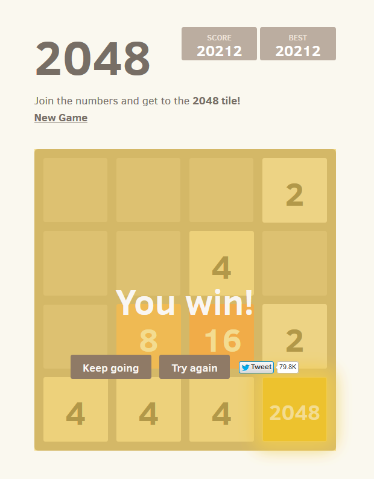

to play the game, press here!
2048 is a simple tile game that took the world by storm a few years ago due to it's simplistic and casual nature. The game consists of a 4x4 board that is randomly filled with tiles each time you move, and the player must combine tiles of the same type to keep the board from filling and ending the game. You do this by choosing a direction, and all of the tiles on the board move as far as possible in the direction you chose. Tiles with the same number will combine into larger tiles, and the ultimate goal is to build a 2048 tile.
For more information, see Wikipedia

Constants:
var TableSize: the size of the game grid
var Win_val = 2048;
Tiles:
each tile will have only a numeric value. They can be empty, or have an integer value.
Empty tiles will be defined as 0, while all other tiles values will be the same as the number stored
Game:
each game will have the following properties:
Win, a bool that tracks whether the game has been won
GameOver, a bool that tracks whether the game has been lost (note that win and Gameover can both be true if a game was won and then the player continued playing, then lost)
turn, the number of turns that the player has made
score, representing the score of the player
Functions/Methods
Up()
Moves each of the tiles to the highest empty spot in line with them, and merges equal tiles. Also creates one random tile in an empty spot on the board. Increments turn and calculates new score
Down ()
Moves each of the tiles to the Lowest empty spot in line with them, and merges equal tiles. Also creates one random tile in an empty spot on the board. Increments turn and calculates new score
Left()
Moves each of the tiles to the Leftmost empty spot in line with them, and merges equal tiles. Also creates one random tile in an empty spot on the board. Increments turn and calculates new score
Right()
Moves each of the tiles to the Rightmost empty spot in line with them, and merges equal tiles. Also creates one random tile in an empty spot on the board. Increments turn and calculates new score
isOver()
returns a bool with the value of GameOver